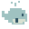

A LITTLE SEASIDE STUDY
静かな背景を表示しています。クジラ娘を動かすにはJavaScriptを有効にしてください。
画面を選んで操作：矢印 / WASDで移動、Jで攻撃、Kで回避、Lで必殺技。Escで一時停止。
海辺の小さな書斎で、クジラ娘がのんびり暮らすドット絵の壁紙です。歩いたり、窓辺でぼんやりしたり、ときどきお昼寝したり。眺めるだけで楽しめます。音はありません。
OSの「視差効果を減らす」に合わせて静止しています。
設定はこのブラウザーの中だけに保存されます。タブが非表示のときや、この画面を開いている間は、風景も一休みします。
「DeepSeekちゃん（クジラ娘）」をモチーフにした非公式のファン作品です。キャラクターの原案・デザインは、この子を生み出したファンコミュニティと原案者に帰属します。DeepSeek社との提携・承認はありません。
背景とキャラクターは、このプロジェクトのために制作したものです。外部の画像・フォントは読み込みません。素材の再配布ライセンスは付与していません。
この子の、おなじみの姿。